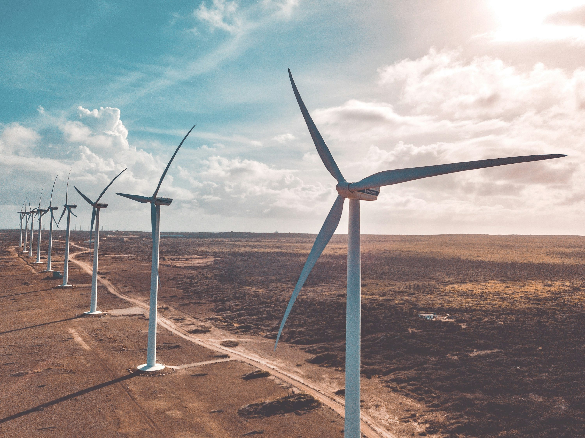
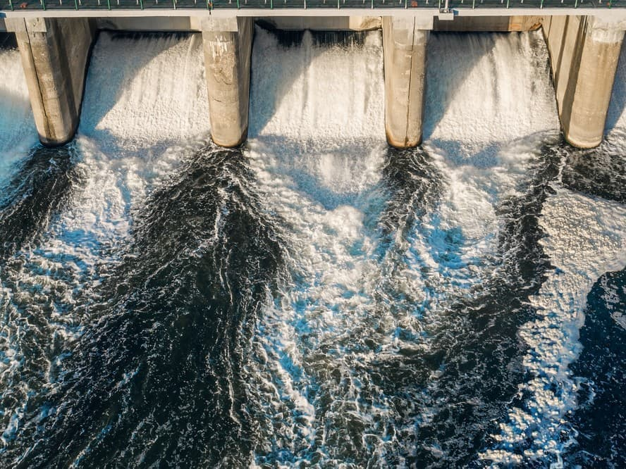
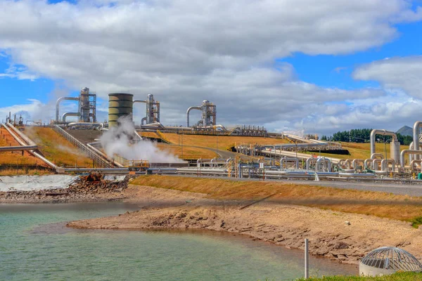

Renewable Energy Technologies☀️
Solar Energy — Power from the Sun ⚡
Solar energy is one of the most promising and widely used forms of renewable energy. It harnesses sunlight to generate electricity or heat, helping reduce dependence on fossil fuels and lowering greenhouse gas emissions.
🌞 How Solar Power Works
Solar panels, also known as photovoltaic (PV) cells, convert sunlight into electricity. These panels are often installed on rooftops, solar farms, and even satellites. When sunlight hits the cells, it knocks electrons loose, generating a flow of electricity.
For homes and small businesses, solar panel systems often include batteries to store extra energy for nighttime or cloudy days. This makes them more reliable and efficient than ever before.

🔋 Benefits of Solar Energy
- ✔️ Clean and Renewable
- ✔️ Low Maintenance
- ✔️ Cost-Effective Over Time
- ✔️ Scalable and Versatile
🧪 Innovations in Solar Technology
Modern research is producing thinner, more flexible solar cells that can be applied to windows, clothing, or even cars. There are also floating solar farms on lakes and reservoirs to save land space and reduce evaporation.
🌍 Environmental Impact
Using solar energy reduces the need to burn fossil fuels like coal or gas, helping fight climate change. It also reduces air pollution and water use compared to traditional power plants.
Conclusion: Solar power is a clean, accessible, and sustainable energy source that holds great promise for a greener future. As technology improves and costs drop, more people around the world are turning to the sun for energy.
Wind Energy — Harnessing the Power of the Air 🌬️🌎
Wind energy is one of the oldest forms of renewable power. Today, it’s also one of the fastest-growing sources of clean electricity. By converting wind into electricity using turbines, we can power homes, businesses, and even entire cities — without pollution.
🌪️ How Wind Turbines Work
Wind turbines have large blades connected to a rotor. When the wind blows, the blades spin, turning the rotor and generating electricity through a connected generator. Wind farms can be found on land (onshore) or out at sea (offshore), where winds are stronger and more consistent.
🌟 Advantages of Wind Energy
- ✔️ 100% Clean
- ✔️ Low Operating Costs
- ✔️ Scalable for Communities and Grids
- ✔️ Job Creation in Green Industries
🌊 Offshore Wind
Offshore wind farms are becoming more popular because they receive stronger, more consistent winds and don’t take up land space. They can generate large amounts of energy without impacting residential areas.
⚠️ Challenges of Wind Energy
- ⛔ Intermittent Wind Availability
- ⛔ Wildlife and Bird Migration Concerns
- ⛔ Aesthetic and Noise Complaints in Some Areas
📈 Future of Wind Power
New technologies like vertical-axis turbines and floating offshore systems are making wind energy more efficient. Combined with improved energy storage, wind will continue to grow as a major energy source worldwide.
Conclusion: Wind energy is a clean, reliable, and renewable resource that supports global efforts to reduce carbon emissions and transition to a sustainable future.
Hydropower — Energy from Flowing Water 💧⚙️
Hydropower, also called hydroelectric power, is one of the oldest and most widely used sources of renewable energy. It uses the force of moving water to generate electricity — cleanly and efficiently.
🌊 How Hydropower Works
Hydropower plants are usually built near dams or fast-flowing rivers. Water flows through turbines, spinning them and generating electricity. The more water and the higher the drop, the more energy is produced.
🔧 Types of Hydropower
- ✔️ Reservoir (Dams)
- ✔️ Run-of-River
- ✔️ Pumped Storage
✅ Benefits of Hydropower
- ✔️ Reliable Energy Source
- ✔️ Flexible for Power Grids
- ✔️ Low Emissions
- ✔️ Long Lifespan
🐟 Environmental Considerations
Large dams can disrupt aquatic ecosystems, fish migration, and river flows. To reduce impact, modern systems use fish ladders, sediment control, and better planning to balance power generation with ecosystem health.
🌐 Hydropower Worldwide
Hydropower supplies around 16% of the world’s electricity. Countries like Canada, Brazil, and Norway use it as a primary source of clean power. It remains a crucial part of global renewable energy strategies.
🚀 Future Developments
Micro-hydro systems offer clean power to remote communities. Smarter turbines and digital monitoring improve efficiency and reduce environmental harm.
Conclusion: Hydropower is a powerful, consistent, and renewable energy solution that will continue to play a key role in the global clean energy future.
Geothermal Energy — Heat from Beneath the Earth 🌋🔥
Geothermal energy is a clean and sustainable power source that comes from the Earth’s internal heat. While it may sound futuristic, humans have used geothermal resources for thousands of years — from hot springs to modern power plants.
🌍 What Is Geothermal Energy?
The Earth’s core is extremely hot — reaching temperatures over 5,000°C. This heat naturally travels upward through rock and water in the Earth’s crust. In some places, this geothermal energy is close enough to the surface to be captured for electricity and heating.
⚙️ How It Works
There are two main uses:
- Direct Use: Heating homes, greenhouses, and spas using hot underground water.
- Electricity Generation: Steam from deep wells spins turbines to produce power.
✅ Benefits of Geothermal Power
- ✔️ Reliable and available 24/7
- ✔️ Very low emissions
- ✔️ Compact footprint on land
- ✔️ Long-lasting infrastructure
⚠️ Environmental Concerns
Some sites may release gases or cause minor tremors. With modern monitoring and safety, risks are small and manageable.
🔮 Future of Geothermal
Enhanced Geothermal Systems (EGS) could allow countries without natural hotspots to tap into this resource in the future.
Conclusion: Geothermal power is clean, efficient, and highly dependable. As the technology spreads, it could become a key player in our low-carbon energy future.
Biomass Energy — Turning Organic Waste into Power 🌾♻️
Biomass energy is a renewable power source derived from plants, animals, and organic waste. It’s one of the oldest energy forms, from burning wood to producing modern biofuels for vehicles and industries.
🌿 What Is Biomass?
Common sources include:
- Wood and wood waste
- Crop residues and food waste
- Animal manure
- Energy crops like switchgrass or algae
🔋 How Biomass Generates Energy
- Combustion – Direct burning for heat or electricity.
- Gasification – Produces syngas from biomass.
- Biofuels – Ethanol from corn or biodiesel from plant oils.
- Anaerobic Digestion – Bacteria break down waste to create biogas.
✅ Advantages of Biomass Energy
- ✔️ Renewable and carbon-balanced
- ✔️ Converts waste into useful energy
- ✔️ Creates rural jobs and income
- ✔️ Works with existing infrastructure
⚠️ Limitations
Unsustainable sourcing may harm forests or air quality. However, with responsible management, it can be a valuable part of a clean energy mix.
Conclusion: Biomass energy recycles nature’s waste into power. With smart policies and sustainable farming, it offers a bridge to a greener future.
Tidal & Wave Energy — Power from the Ocean 🌊⚡
Earth’s oceans are in constant motion, providing a massive and largely untapped source of renewable energy. Tidal and wave technologies aim to convert this energy into electricity — cleanly and predictably.
🌊 What Is Tidal Energy?
Tidal systems use the gravitational pull of the moon to create rising and falling sea levels. Types include:
- Tidal Barrages – Dams that trap water at high tide and release it at low tide through turbines.
- Tidal Stream Generators – Turbines placed in fast-moving underwater currents.
🌊 What Is Wave Energy?
Wave energy uses floating or submerged devices that capture the surface movement of waves. These devices turn motion into power via hydraulics or generators.
✅ Benefits of Ocean Energy
- ✔️ Highly predictable
- ✔️ Massive potential, especially for coastal nations
- ✔️ Produces no emissions
- ✔️ Minimal visual impact (underwater)
⚠️ Challenges
- ⛔ High upfront costs and technology development
- ⛔ Potential effects on marine ecosystems
- ⛔ Harsh ocean conditions increase maintenance
🔬 Future Prospects
Advancements in underwater turbines, floating platforms, and flexible devices are making ocean energy more efficient and affordable. Countries like the UK and Canada are leading in deployments.
Conclusion: Ocean energy is a promising part of the renewable mix. With further research and investment, it could become a reliable source for coastal communities worldwide.
Energy Storage — The Key to a Renewable Future 🔋⚡
As the world transitions to renewable energy, one challenge remains: how to store energy efficiently when the sun isn’t shining or the wind isn’t blowing. This is where energy storage becomes crucial.
🔄 Why Energy Storage Matters
Renewables are intermittent — they don’t produce energy 24/7. Energy storage helps balance supply and demand, storing extra energy and releasing it when needed.
🧰 Types of Energy Storage
- Lithium-ion Batteries 🔋 – Fast charging, widely used in EVs and home systems.
- Pumped Hydro 💧 – Moves water uphill and releases it through turbines.
- Thermal Storage 🌡️ – Stores energy as heat in molten salt or water.
- Compressed Air 🌬️ – Stores energy in underground air chambers.
- Flywheels 🔄 – Stores kinetic energy using spinning rotors.
🌍 Environmental Benefits
- ✔️ Reduces fossil fuel dependency
- ✔️ Stabilizes energy grids
- ✔️ Enables full use of renewables
📈 Future of Energy Storage
New technologies like solid-state batteries, iron-air systems, and hydrogen storage are making storage cleaner, safer, and more efficient.
Conclusion: Energy storage is vital to a 100% renewable energy future. As technology improves, storage will unlock the full power of solar, wind, and more.
Electric Vehicles — Driving Toward a Cleaner Future 🚗⚡
Electric Vehicles (EVs) are revolutionizing transportation. From Teslas to electric buses, EVs help reduce pollution and our reliance on fossil fuels.
🔌 What Is an Electric Vehicle?
EVs run on electricity stored in a battery, powering a motor instead of using gasoline. They come in several types:
- BEVs – Fully electric (e.g., Tesla Model 3)
- PHEVs – Plug-in hybrids (e.g., Prius Prime)
- HEVs – Hybrids with small electric systems
⚙️ How EVs Work
Energy stored in a battery powers the motor. Regenerative braking also recaptures energy when slowing down, improving efficiency.
🌍 Benefits of EVs
- ✔️ Zero tailpipe emissions
- ✔️ Lower fuel and maintenance costs
- ✔️ Quieter roads
- ✔️ High energy efficiency
⚡ Challenges
- ⛔ Limited charging infrastructure in some regions
- ⛔ Environmental impact from battery mining
- ⛔ Range anxiety among drivers
🔮 The Road Ahead
Solid-state batteries, solar charging, and global EV mandates promise a rapid shift to clean transport. Countries aim to phase out gas cars by 2035 or sooner.
Conclusion: EVs are transforming how we move — cleaner, cheaper, and smarter. With infrastructure and innovation, they are driving us toward a greener future.
Smart Grids — Powering the Future Intelligently 🌐⚡
Electricity systems are changing. Traditional grids deliver power in one direction — from plants to homes. Smart grids are digital, dynamic, and interactive — improving how we generate, store, and use electricity.
🧠 What Is a Smart Grid?
Smart grids use sensors, software, and two-way communication to monitor and adjust electricity flow. They help manage demand, prevent blackouts, and integrate renewable energy.
🏡 How Consumers Benefit
- Smart Meters – Show real-time usage and pricing
- Time-of-Use Rates – Save money during off-peak hours
- Energy Feedback – Encourages energy-saving behavior
🌱 Environmental Advantages
- ✔️ Supports more solar and wind energy
- ✔️ Reduces energy waste
- ✔️ Cuts greenhouse gas emissions
⚙️ Key Technologies
- IoT Devices – Smart thermostats and appliances
- AI and Big Data – Predict and balance grid loads
- EV Integration – Cars as mobile power storage
🔒 Security & Privacy
As systems become digital, cybersecurity is critical. Utility companies must safeguard customer data and infrastructure.
Conclusion: Smart grids are the backbone of tomorrow’s energy system — efficient, green, and resilient. They are essential to powering our world sustainably and intelligently.
Solar Farms — Powering Cities with the Sun ☀️🏙️
As the world embraces clean energy, solar power has become a front-runner in reducing dependence on fossil fuels. One of the most impactful methods of generating solar energy is through solar farms — large-scale installations that harness the sun’s power to produce electricity for thousands of homes and businesses.
🔋 What Are Solar Farms?
A solar farm, also known as a solar power station or photovoltaic (PV) power plant, is a collection of solar panels installed over large areas of land. Unlike rooftop solar panels that serve individual buildings, solar farms feed power directly into the electric grid, supporting entire communities and industries.
There are two main types:
- Photovoltaic (PV) Solar Farms: Convert sunlight directly into electricity using solar panels.
- Concentrated Solar Power (CSP): Use mirrors to focus sunlight onto a central tower, generating heat to produce electricity.
🌍 Advantages of Solar Farms
- ✅ Clean Energy Source: No greenhouse gases or pollutants during operation.
- ✅ Renewable and Abundant: The sun provides unlimited energy.
- ✅ Scalable: Ranges from small community projects to utility-scale plants.
- ✅ Low Maintenance: Minimal upkeep after installation.
⚠️ Challenges and Considerations
- ⚠️ Land Usage: Requires large areas, which may compete with farming or wildlife.
- ⚠️ Intermittency: No energy production at night or during poor weather.
- ⚠️ High Upfront Costs: Though decreasing, installation costs are still significant.
🔮 Emerging Trends in Solar Farming
- Floating Solar Farms: Installed on water bodies, saving land and reducing evaporation.
- Agrivoltaics: Growing crops under solar panels for dual land use.
- Battery Storage: Stores excess power for use at night or during peak demand.
📊 Global Impact
Countries like India, China, and the U.S. are leading in solar farm deployment. Mega projects like the Bhadla Solar Park in India and Tengger Desert Solar Park in China can power millions of homes while reducing carbon emissions.
🌱 Conclusion
Solar farms represent a clean, scalable energy solution that is increasingly affordable. With technology advancing and global demand for renewable energy rising, solar farms are poised to become a cornerstone of a sustainable, low-carbon future.